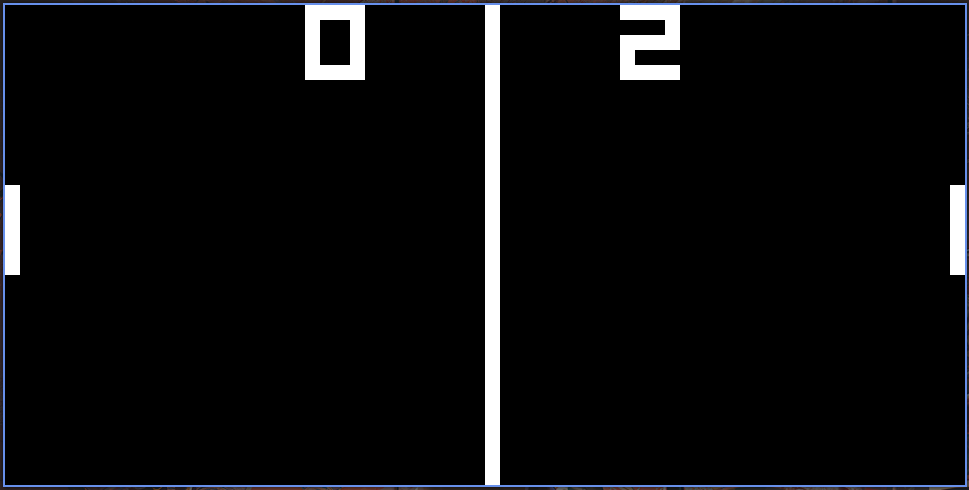
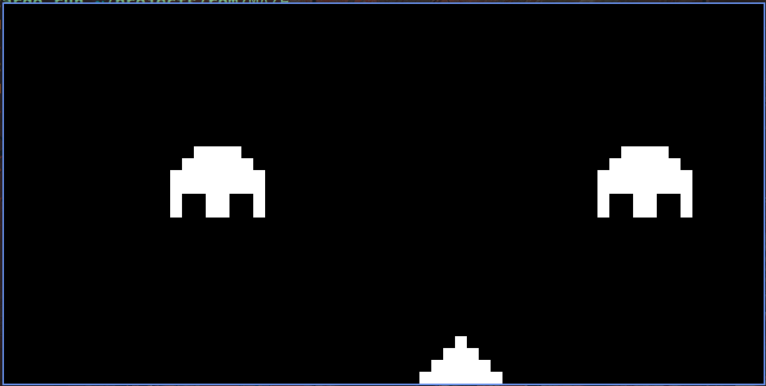

Chip 8
Chip 8 Emulator with rust
2th Aug 2022 ~ Dion Pinto
Introduction
While wandering through the depths of stackoverflow I often found people suggesting the best way to get good at a particular programming language is to implement a chip 8 emulator with that language. So I began the process of researching what a chip 8 emulator was and fell into a rabbit hole of emulators, I decided to jump into the ocean of emulator design and quickly realized I was going to sink.
Opcodes, timers .....WHATT!!!, I didnt think I would ever need to hear the word opcode after my horrible time with 8085 in college, where I basically left off more confused than before taking the course.But the only reason that was the case was because we were only thought about the microprocessor in a theoretical nature, and the labs were basically an exercise in rote learning opcodes in an order to solve the question.
Im currently on a quest to gain a deeper understanding of computers and thought a good place to start would be to build an emulator and gain an insight into how that process works. Ofcourse me being a beginner I decided to follow this excellent book by (aquova)
You can find my git repository here (Repository Link) Its pretty similar to the one by aquova, with the addition of comments to understand certain shift and bit manipulation operations.
Demo
Here are some games on the emulator. I downloaded the roms (from here)
 